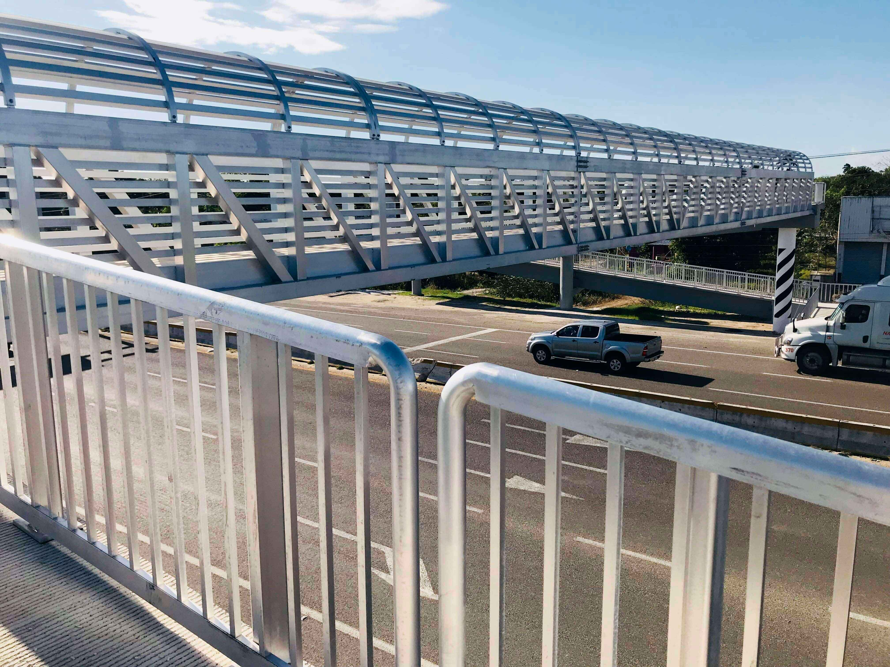

<div class="about">
  <div class="about__content">
    <div class="about__text">
      <p>En GRUPO ERMOFE tenemos un legado en la industria de la construcción. Somos tres generaciones de ingenieros con
        más de 60 años de experiencia. En cada generación hemos apostado por buscar nuevos enfoques y traer nuevas
        tecnologías al ramo de la construcción con el fin de brindar los mejores productos y servicios a nuestro país.
      </p>
    </div>
    <div>
      <div class="timeline">
        <div class="container right dot">
          <div class="content">
            <div class="info">
              <div class="title">1990</div>
              <div class="text">Nuestro fundador después de graduarse de ingeniero civil, comenzó a trabajar con su
                papá,
                quien desde pequeño inculcó, el gusto por esta profesión, realizando obras como puentes tubulares y
                ploteos.</div>
            </div>
          </div>
        </div>
        <div class="container left chevron">
          <div class="content">
            <div class="image">
              
            </div>
            <div class="info">
              <div class="title">1993</div>
              <div class="text">Decidió emprender por su cuenta, realizando diferentes tipos de proyectos para el sector
                público y privado.</div>
            </div>
          </div>
        </div>
        <div class="container right chevron">
          <div class="content">
            <div class="info">
              <div class="title">2003</div>
              <div class="text">Por la alta demanda de obras en el estado de Tabasco, que constituye formalmente GRUPO
                ERMOFE. Realizando puentes, escuelas y obras privadas.</div>
            </div>
          </div>
        </div>
      </div>
    </div>
    <div class="about__text">
      <p>Al pasar los años GRUPO ERMOFE ha ido creciendo, formando un equipo de trabajo multidisciplinario; nuestros
        colaboradores administrativos están día a día actualizándose para brindar el mejor servicio en cada una de sus
        áreas, mientras que nuestros ingenieros y arquitectos se capacitan constantemente y cuentan con la experiencia
        necesaria para brindar un servicio integral que va desde la concepción del proyecto, el diseño, la fabricación,
        el suministro y la instalación de todos nuestros productos.</p>
    </div>
  </div>
</div>
